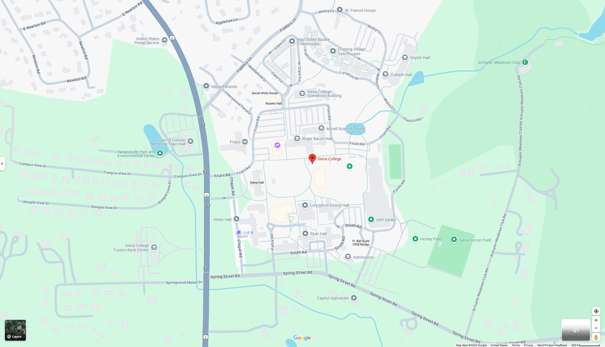

I'm a Computer Science student at Sierra College (Class of 2025) with a 3.70 GPA and a strong foundation in Java, Python, GitHub, and systems-level programming. My academic focus spans data structures, database management, assembly language, logic design, and more.
Currently, I lead an interdisciplinary team of Psychology and Computer Science students working to develop a machine learning project for detecting suicidal ideation. I also serve as a Computer Science tutor, supporting dozens of students with their technical coursework.
During a recent internship, I worked with a team to develop custom APIs, contributed to training datasets, and built AI models in Python to improve mental health resource accessibility. I’ve also completed a 150-hour research internship where I explored the impact of technology on Gen Z’s emotional well-being.
In my free time, I'm an active volunteer in Siena’s Annual Programming Contest and passionate about merging technical knowledge with creative problem solving. My hobbies include military experience, resistance study, and a deep commitment to authentic cuisine design.
